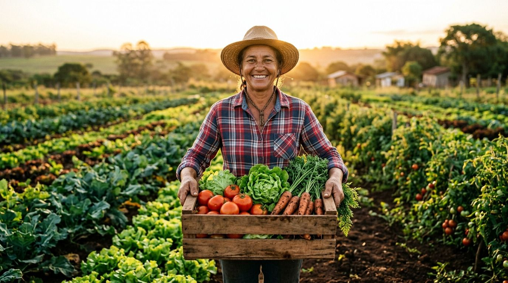

Pequeno produtor
Anuncia a colheita em dois minutos, escolhe se é venda ou doação e combina a retirada direto com quem vai buscar. Sem atravessador mandando no preço.
Publicar uma safra
Só aparece quem está a até 50 km de você
A AgroTech liga quem planta a mercadinhos e ONGs aqui perto. Sem atravessador, com frete curto e com destino certo para a colheita que hoje se perde no galpão.
Doar não custa nada, em etapa nenhuma. Esse é o nosso compromisso com quem alimenta pessoas.
dos estabelecimentos agropecuários do Brasil são de agricultura familiar
IBGE · Censo Agropecuário 2017das frutas e hortaliças se perdem antes de chegar à mesa do consumidor
FAO · perdas e desperdício de alimentosé o custo do módulo de doação para instituições sociais cadastradas
Compromisso AgroTech · ODS 2.1Cada um entra com o que já tem e resolve o problema do outro: quem planta vende a colheita, quem revende compra fresco e perto, e quem alimenta pessoas recebe o que sobrou, de graça.
Anuncia a colheita em dois minutos, escolhe se é venda ou doação e combina a retirada direto com quem vai buscar. Sem atravessador mandando no preço.
Publicar uma safraMercadinho, quitanda e feirante compram direto do sítio mais perto, com produto colhido na semana e frete que cabe no preço.
Ver ofertas de vendaVê no mapa as doações aqui perto e marca a retirada. Paga só o transporte, mais nada.
Ver doações abertasJá está colhido e tem prazo para ser retirado. Se ninguém buscar, essa comida se perde.
A iniciativa
No vídeo a gente mostra a navegação do site: como o produtor publica um lote, como o comércio encontra a safra mais perto e como a instituição social pede uma doação.
Pitch vídeo · 3 min · assistir no YouTube
Se você produz, revende ou coordena um projeto social, escreva para a equipe: é a conversa com quem está na ponta que decide o que entra na plataforma.